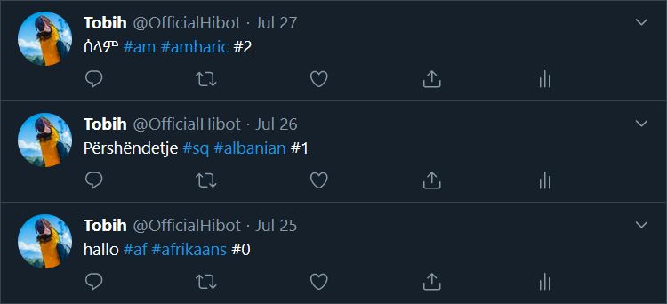

Twitter Bot
Hibot is a Twitter bot which can tweet a message in 100+ different languages. For now, Hibot tweets hello every day in another language. It runs on my Raspberry Pi which is configured to execute the script every day at 19:00 GMT+1. I might switch up the message in the future. We'll see.
Project Breakdown
- Twitter API
- Translator
- Language picker
- Scheduler
1. Twitter API
Install and import tweepy. This is a Python library to access the Twitter API.
import tweepy # pip install tweepyAuthenticate the Python script with your Twitter account using keys & tokens. These can be generated if you upgrade your account to a developer account.
API_KEY = os.environ.get("TWITTER_API_KEY")
API_SECRET_KEY = os.environ.get("TWITTER_API_SECRET_KEY")
ACCESS_TOKEN = os.environ.get("TWITTER_ACCESS_TOKEN")
ACCESS_SECRET_TOKEN = os.environ.get("TWITTER_ACCESS_SECRET_TOKEN")
if API_KEY is None or API_SECRET_KEY is None:
exit("API KEYS are None!")
if ACCESS_TOKEN is None or ACCESS_SECRET_TOKEN is None:
exit("ACCESS TOKENS are None!")
auth = tweepy.OAuthHandler(API_KEY, API_SECRET_KEY)
auth.set_access_token(ACCESS_TOKEN, ACCESS_SECRET_TOKEN)Tweet a tweet with the update_status() method.
api = tweepy.API(auth)
message = "I'm tweeting a tweet"
api.update_status(message)2. Translator
Install and import googletrans.
from googletrans import Translator # pip install googletransmsg = "hello"
translator = Translator()
translated = translator.translate(msg, src="en", dest=language_code)3. Language picker
The destination language is different each time. I've made a LanguagePicker class which reads & writes an index from/to a file. The index is used to decide which destination language to pick, from a dictionary with all the supported languages and their corresponding language code.
@staticmethod
def get_languages():
"""
Language dictionary like googletrans.LANGUAGES but without the old duplicated languages.
:return: All languages with their code
:rtype: dict
"""
return {
'af': 'afrikaans',
'sq': 'albanian',
'am': 'amharic',4. Scheduler
The codebase is copied to my Raspberry Pi. To run the script automatically every day, a new crontab is configured. Crontab is a unix command to execute a program or script periodically on a given schedule.
Run the crontab -e command to edit.
pi@raspberrypi:~ $ crontab -e# Run python script every day at 19:00
0 19 * * * . $HOME/.profile; ~/Documents/hibot/venv/bin/python3 ~/Documents/hibot/main.pyThe Twitter secret keys & tokens are set as environment variables in the ~/.profile file.
export TWITTER_API_KEY=
export TWITTER_API_SECRET_KEY=
export TWITTER_ACCESS_TOKEN=
export TWITTER_ACCESS_SECRET_TOKEN=The cron job knows nothing about the environment. That's why . $HOME/.profile; is set before executing the python script.